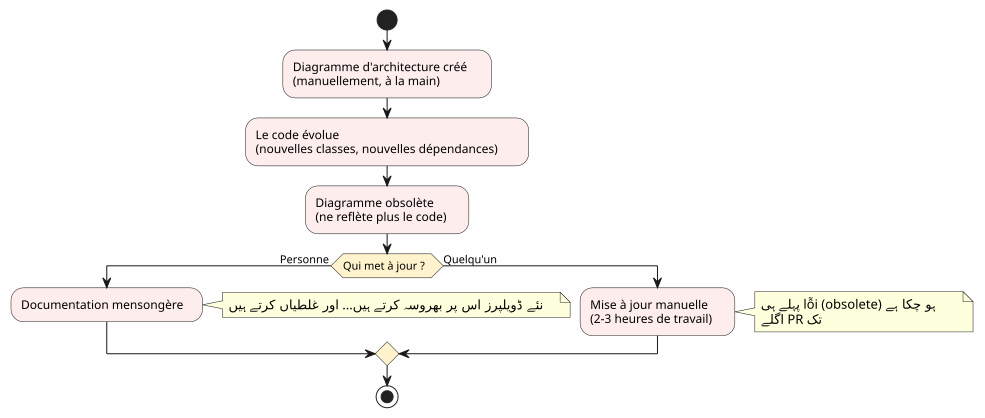
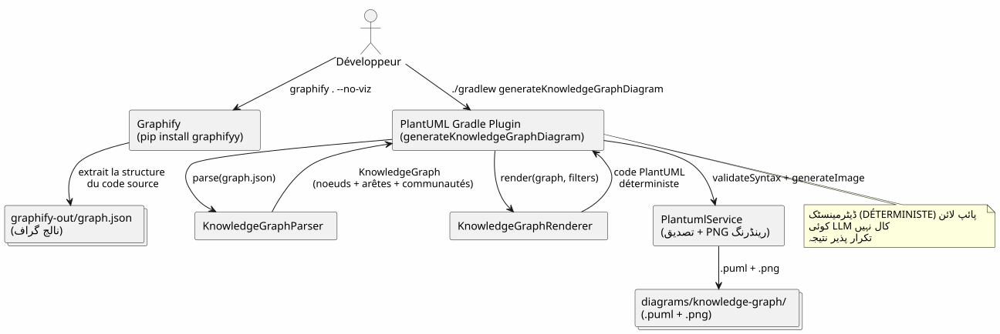
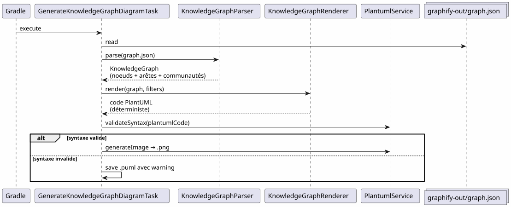
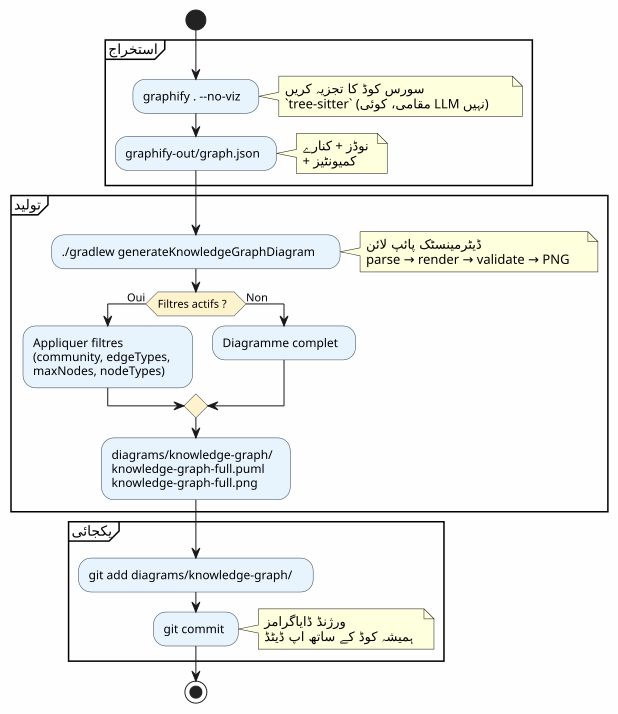
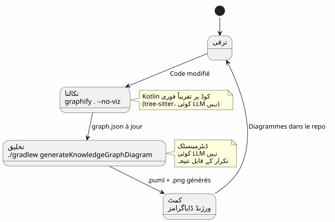
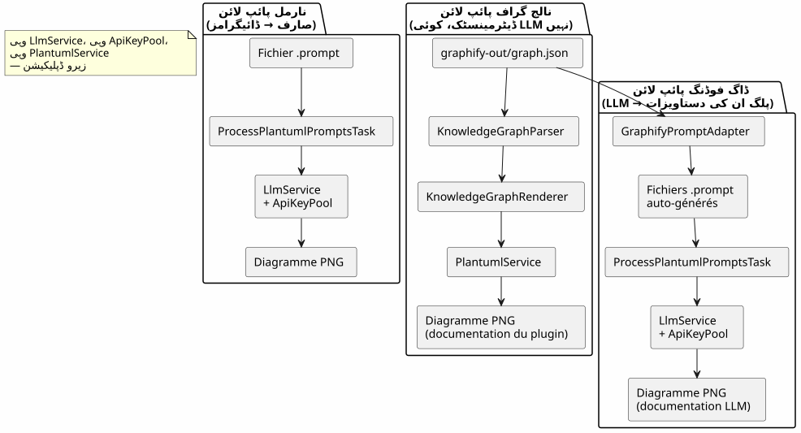
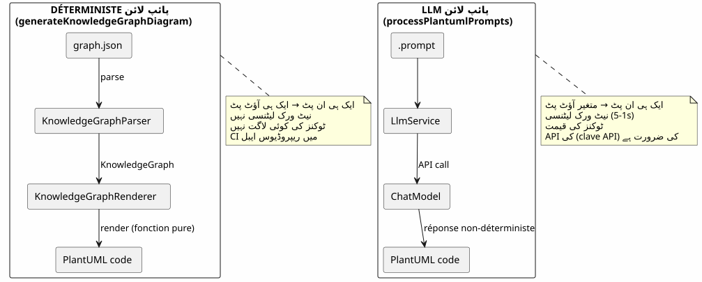
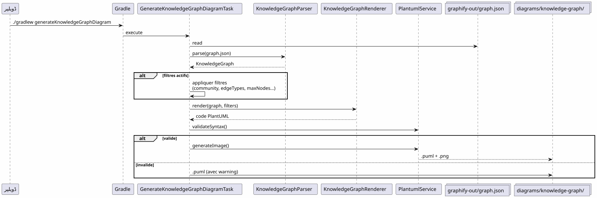
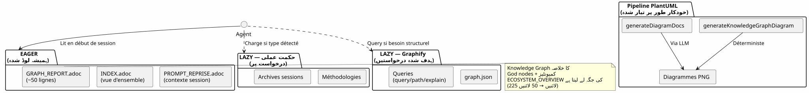
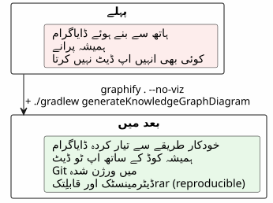

Gradle ورک فلو میں Graphify کو ضم کرنا: نالج گراف سے PlantUML ڈایاگرام تک ایک ہی کمانڈ میں
شائع شدہ: 19 April 2026
- المسئلة : ہمیشہ کُوڈ سے پیچھا ڈائاگرامات
- حل: ایک یقینی پائلائن Knowledge Graph → PlantUML
- مرحلہ 1: Graphify انسٹال کریں اور Knowledge Graph نکالیں
- مرحلہ 2 : Gradle پلاگین Knowledge Graph کو PlantUML میں بدل دیتا ہے
- مرحلہ 3 : روزانہ استعمال
- Gradle workflow میں مکمل پائپ لائن
- ڈاگفوڈنگ : پلاگائن خود خود کو دستاویز بناتا ہے
- کیوں یہ محدد ہے (اور کیوں یہ اہم ہے)
- خود کے پائپ لائن کے ڈائاگرام
- پروجیکٹ گورننس میں شامل ہونا
- تیارکاری: 5 منٹ کی چیک لِسٹ
- فخوں اور تخفیف کے اقدامات
- آخر میں کیا حاصل ہوتا ہے
- روابط
آپ کی کوڈ بیس بڑھ رہی ہے۔ ماڈیولز کے درمیان وابستگییں ضاہر ہوتی جاتی ہیں۔ معماری کی ڈاکيومینٹیشن لکھنے سے پہلے ہی پرانے ہو جاتی ہے۔ اور اگر آپ کا Gradle build automatiquement ڈائجرام بنā sake, جو کوڈ کی اصل ساخت سے اپ‑ٹو‑ڈيٹ ہو؟ یہی точно Graphify + PlantUML Gradle Plugin pipeline karta hai :`graphify . --no-viz`Knowledge Graph نکال دیتا ہے,`./gradlew generateKnowledgeGraphDiagram`یہ PlantUML ڈائاگرام میں تبدیل کرتا ہے۔ صفر LLM، صفر دستیاب، 100% حتمی۔
- ٹوک
-
[]
المسئلة : ہمیشہ کُوڈ سے پیچھا ڈائاگرامات
کسی بھی منصوبے جو ہزاروں سطر سے زیادہ ہوتا ہے، اس سندرم کا سامنا کرتا ہے :
-
ہم پروיקט کے ابتداء میں معماریت کا ڈائگرام بناتے ہیں
-
کود تبدیل ہو رہا ہے، انحصارات بدل رہے ہیں
-
ڈیگرام بنتا ہے زینت کا جھوٹ
-
کسی نے اسے آپ ڈیٹ نہیں کیا کیونکہ یہ پریشان کن ہے
-
نئے داخل ہونے والے اس پر مبنی رہتے ہیں اور غلطی کرتے ہیں

سوال یہ نہیں ہے کیا ڈائگرامز لازمی ہیں؟ — سب جانتے ہیں کہ ہاں۔ سوال یہ ہے :کون انھیںمحدث رکھتا ہے؟
جواب: کوئی نہیں۔ سिवائے اس کے کے یہ خودکار ہو۔
حل: ایک یقینی پائلائن Knowledge Graph → PlantUML
اصول سادہ ہے: ہاتھ سے diagram بنانے کی جگہ، ہم ان کوکوڈ کی حقیقی ڈھانچے سے پیداہوا.

دو کمانڈز. یہ سب ہے.
# Étape 1 : extraire le Knowledge Graph
graphify . --no-viz
# Étape 2 : générer les diagrammes PlantUML
./gradlew generateKnowledgeGraphDiagramنتیجہ؟ فائلیں`.puml` et .png`داخل`diagrams/knowledge-graph/, Git میں ورژنڈ، ہمیشہ کوڈ کے ساتھ اپ‑ٹو‑ڈیت
مرحلہ 1: Graphify انسٹال کریں اور Knowledge Graph نکالیں
تنصیب
Graphify ایک Python اَalat ہے جو آپ کے codebase کا تجزیہ کرتا ہے اور ایک منظم علم کا گراف بناتا ہے :
# Méthode recommandée
uv tool install graphifyy && graphify install --platform opencode
# Alternative avec pip
pip install graphifyy && graphify install --platform opencodeاستثنیات کو کنفیگر کریں
فائل بنانا`.graphifyignore`پروجیکٹ کی جڑ پر، وہ فائلیں خارج کرنے کے لئے جو کاروباری منطق کا حصہ نہیں ہیں:
# Secrets — JAMAIS dans le graphe
*-context.yml
*.env
# Fichiers générés
build/
.gradle/
# Tests fonctionnels
src/functionalTest/Knowledge Graph نکالیں
graphify . --no-vizفلیگ`--no-viz`یہ HTML کی تولید (Gradle پائلائن میں غیر ضروری) کو چھوڑ دیتا ہے۔ نتیجہ ایک فائل ہے`graphify-out/graph.json`شامل :
-
بند: کلاسز، فنکشنز، فائلیں — ان کے ٹائپ اور کمیونٹی کے ساتھ
-
کنارے: نڈوں کے درمیان تعلقات (EXTRACTED کوڈ سے, INFERRED LLM کے ذریعے)
-
سماج: مرتبط نودز کے خودکار گروپنگ
{
"nodes": [
{"id": "0", "label": "LlmService", "file_type": "code", "community": 0},
{"id": "1", "label": "ApiKeyPool", "file_type": "code", "community": 0},
{"id": "2", "label": "PlantumlService", "file_type": "code", "community": 1}
],
"links": [
{"source": "1", "target": "0", "relation": "uses", "confidence": "EXTRACTED", "weight": 0.9},
{"source": "0", "target": "2", "relation": "calls", "confidence": "INFERRED", "weight": 0.7}
]
}|
سورس کوڈ ( |
مرحلہ 2 : Gradle پلاگین Knowledge Graph کو PlantUML میں بدل دیتا ہے
پائلائن کی معماری
پلاگین`com.cheroliv.plantuml`ایک کام شامل کرتا ہے`generateKnowledgeGraphDiagram`جو تبدیل کرتا ہے`graph.json`PlantUML ڈائگراموں میںکاملاً تعییناتی:

اندرونی اجزاء
| جز | رول |
|---|---|
|
پارس کریں`graph.json`— تین فارمٹس سپورٹ کرتا ہے: نیٹیف گرافی ( |
|
ایک کو ڈیٹرمنسٹ طور پر تبدیل کرتا ہے`KnowledgeGraph`پلنٹ یو ایم کے کوڈ میں. قسم کے حسب گروپ، پیکجوں میں کوميونیٹیز، خودکار لیجند۔ |
|
Gradle کام جو منظم کرتا ہے: parse → render → validate → PNG. Gradle properties کے ذریعے قابلِ تنظیم. |
|
ڈیٹا ماڈلز :`KnowledgeGraph`, |
|
نحوی تصدیق + PNG رینڈر (پلاگїн کے تمام کاموں میں دوبارہ استعمال ہوتا ہے). |
rendering کے قواعد
renderer بصری deterministic conventions لاگو کرتا ہے:
| کنار کی قسم | نوٹیشن PlantUML | معنی |
|---|---|---|
نقل کردہ |
|
سورس کوڈ سے نکالا گیا رابطہ (یقین) |
نتیجہ نکالا |
|
استنتاج کردہ رابطہ LLM کے ذریعے (اعتماد کا امتیاز) |
مبہم |
|
مبہم رابطہ (جانچ کے لیے) |
کمیونٹیز PlantUML پیکیج کے طور پر render (دکھائی) جاتی ہیں، جس میں خودکار رنگ پالیٹ ہوتی ہے۔
مرحلہ 3 : روزانہ استعمال
مکمل ڈائاگرام
# Générer le diagramme du Knowledge Graph complet
./gradlew generateKnowledgeGraphDiagramخروج :`diagrams/knowledge-graph/knowledge-graph-full.puml`+.png
کميونٹی حسب فیلٹر کریں
# Une seule communauté
./gradlew generateKnowledgeGraphDiagram \
-Pplantuml.kg.community=community_0
# Limiter le nombre de noeuds (lisibilité)
./gradlew generateKnowledgeGraphDiagram \
-Pplantuml.kg.community=community_0 \
-Pplantuml.kg.maxNodes=15کینارے کے نوع کے مطابق فیلٹر کریں
# Uniquement les relations certaines (EXTRACTED)
./gradlew generateKnowledgeGraphDiagram \
-Pplantuml.kg.edgeTypes=EXTRACTED
# Relations certaines + inférées
./gradlew generateKnowledgeGraphDiagram \
-Pplantuml.kg.edgeTypes=EXTRACTED,INFERREDفلٹر حسب نوع عقده اور اعتماد
# Uniquement les classes de code
./gradlew generateKnowledgeGraphDiagram \
-Pplantuml.kg.nodeTypes=code
# Seuil de confiance minimum (pour les INFERRED)
./gradlew generateKnowledgeGraphDiagram \
-Pplantuml.kg.minConfidence=0.7شخصی آؤٹ پٹ ڈائریکٹری
./gradlew generateKnowledgeGraphDiagram \
-Pplantuml.kg.outputDir=docs/architectureخواص کی مکمل حوالہ
| مملکت | پیشفرض | وصف |
|---|---|---|
|
(سب) |
نام کے مطابق سماجی گروہوں کو فیلٹر کریں (حصے کی مطابقت) |
|
(تمام) |
کمی سے جداسے کردہ کنارے کے نوع :`EXTRACTED`, |
|
|
Edges کے لیے حد أدنى اعتماد |
|
(لامحدود) |
نمائش کے لیے زیادہ سے زیادہ نوڈز |
|
(تمام) |
گہنچوں کے انواع کما سے الگ (مثلاً`class`, |
|
|
فائلوں کے لیے آؤٹ پٹ ڈائریکٹری`.puml` et |
Gradle workflow میں مکمل پائپ لائن
ورک فلو کی قسم

ترقیاتی سیکل میں شامل
پاپ لائن ترقی کے اہم مراحل میں ذاتی طور پر شامل ہوتا ہے :

انکریمنٹل اپ ڈیٹ
جب کڈ بدل جاتا ہے، تو ہم gesamte graf سے sıfr سے دوبارہ بناتے نہیں ہیں :
# Mise à jour incrémentale (fichiers modifiés uniquement)
graphify . --update
# Puis régénérer les diagrammes
./gradlew generateKnowledgeGraphDiagram|
|
ڈاگفوڈنگ : پلاگائن خود خود کو دستاویز بناتا ہے
پلاگ ان PlantUML پروپمپٹس کو ڈائیاگراموں میں تبدیل کرنے کے لیے موجود ہے۔ یہ بھی اپنی propre کوڈ بیس کو دستاویزاتی ڈائیاگراموں میں تبدیل کر سکتا ہے۔ یہ dogfooding ہے: پلاگ ان اپنی خدمت خود استعمال کرتا ہے۔

مرتبطہ گریڈل ٹاسک:
| کام | LLM ? | تفصیل |
|---|---|---|
|
نہیں |
بدل`graph.json`PlantUML میں (تعیینی) |
|
ہاں |
پیدا کریں کچھ`.prompt`گراف سے، انہیں LLM (dogfooding) کے ذریعے پروسیس کیا جاتا ہے |
# Documentation déterministe (rapide, pas de LLM)
./gradlew generateKnowledgeGraphDiagram
# Documentation LLM (plus riche, consomme des tokens)
./gradlew generateDiagramDocsکیوں یہ محدد ہے (اور کیوں یہ اہم ہے)
پائپ لائن کا اہم نقطہ`generateKnowledgeGraphDiagram`:وہ کوئی LLM کو نہیں بلاتا. تبدیل`graph.json`→ PlantUML ایک خالص فنکشن ہے۔

ملموس فوائد :
| فائدہ | اثر |
|---|---|
قابلیت تکثیر |
بھی`graph.json`→ ایک ہی نمشہ. بالکل. ہر بار. |
صفر لاگت |
کسی LLM کے کال نہیں = نہ ٹوکنز = نہ_API بِل |
صفر لاٹنسی |
Parse + render تقریباً 100ms ملتا ہے، 1-5 ثوانی نہیں۔ |
مطابق CI |
کلی API کی ضرورت نہیں۔ متغیر LLM کے جواب کی وجہ سے فلیکی ٹیسٹ نہیں۔ |
ورژن کرنے کے قابل |
Le |
خود کے پائپ لائن کے ڈائاگرام
لوپ کو بند کرنے کے لیے، یہ پائپ لائن کا ڈائیگرام ہے جس طرح یہ پلگ ان سے پیدا ہوگا:

پروجیکٹ گورننس میں شامل ہونا
ہماری پروجيٽ میں، یہ پائپلاین EAGER/LAZY کنٹیکسٹ منیجمنٹ کی ایک استراتژی کے طور پر اے اے آجینٹ کے لیے شامل ہے۔ نالوج گراف (Knowledge Graph) ہینڈ‑میکڈ آرکیٹچر ڈاکمیونٹی کی جگہ ایک منظم، قابل کوئری اور خود‑آپ ڈیٹ ہونے والا گراف لے لیتی ہے۔

دو نظاموں کی شادی مکمل ہے :
-
استراتژی کس کی اور کیسے کی مدیریت کرتی ہے— حکمرانی, کام کی ترتیب, محفوظ کرد
-
Graphify کیا اور کہاں کا انتظام کرتا ہے— کد کی ساخت، رابطے، ہدف شدہ کوئری
_ سیشن کی اسٹریٹیجی اسےmanage کرتی ہےکب et le کیسے(حاکمرانی, workflow, حدود), مناجمنٹ کرتا ہےکیا et le کہاں(کوڈ کی ساخت, روابط, هدف کے کوئرئیز). PlantUML پائلائن یہ manage karti haiکسی کے ساتھ(حتمی ڈائاگرام، ورژنڈ، ہمیشہ اپ ڈیٹ). _
تیارکاری: 5 منٹ کی چیک لِسٹ
| # | مرحلہ | آرڈر |
|---|---|---|
1 |
Graphify کو انسٹال کریں |
|
2 |
الاستثناءات کو سيتاپ Karachi |
بنانا`.graphifyignore` |
3 |
Knowledge Graph نکالیں |
|
4 |
ڈائگرامات بنائیں |
|
5 |
نتائج کو Submit کریں |
|
# Script complet en 5 commandes
uv tool install graphifyy
cat > .graphifyignore << 'EOF'
*-context.yml
*.env
build/
.gradle/
EOF
graphify . --no-viz
./gradlew generateKnowledgeGraphDiagram
git add graphify-out/GRAPH_REPORT.adoc graphify-out/graph.json diagrams/knowledge-graph/فخوں اور تخفیف کے اقدامات
| فخ | تفصیل | تخفیف |
|---|---|---|
بہت ضخیم گراف |
ایک بڑا 프로ジェкт بہت سو نودیں پیدا کرتا ہے جو پڑھنے میں ناہم ہیں |
استعمال کرنا`-Pplantuml.kg.maxNodes=30`اور کميونیٹی سے فیلٹر کریں |
بہت وسیع استثناءات |
بہت سے فائلز میں`.graphifyignore`граاف کی مقدار کو کم کرتا ہے |
صرف credentials اور build کو buiten کرنے سے شروع کریں |
تیروں کی سمت |
INFERRED کنارے مبہم سمت رکھ سکتے ہیں |
فیلٹر حسب`-Pplantuml.kg.edgeTypes=EXTRACTED`صرف یقینی تعلقات کے لیے |
قدیمی گراف |
کد تبدیل ہوتا ہے مگر گراف دوبارہ بنا نہیں جاتا |
استعمال`graphify . --update`معمولاً یا گٹ ہُک`graphify hook install` |
آپ ڈیٹ کردہ لاگت |
اضافاتی اپ ڈیٹس تقریباً مفت ہیں (tree-sitter مقامی) |
صرفڈاکس ( |
آخر میں کیا حاصل ہوتا ہے

واقعی فائدے :
| منافع | تفصیل |
|---|---|
ڈاکیومینٹیشن ہمیشه محدث |
ڈیگرامات موجودہ کوڈ کو ظاہر کرتے ہیں، دستی سناپشاٹ نہیں۔ |
صفر نگاہی کا محنت |
ڈیاگرام ہر بنڈ پر دوبارہ تیار ہو جاتے ہیں |
تقنی قرض کی کسر |
اب diagrammat کو ہاتھ سے محفوظ یا اپ ڈیٹ کرنے کی ضرورت نہیں |
نئے کے لیے بصری سیاق |
ایک نئے ڈیولپر ڈائاگرامات دیکھ کر آرکیٹیکچر سمجھتا ہے |
فائن-ٹنیوگ کا امکان |
جفت (زیر-گراف → ڈائگرام) AI کے تربیت کے مثال |
خودکار تصدیق |
`PlantumlService.validateSyntax()`ہر پیدا کیا گیا ڈئیاگرام جانچتا ہے |
جلدی آئین بورڈنگ |
5 ڈائگرامز = معماری کا مکمل نظر |
_ جس کے پاس ایک _کیوں ہو، وہ تمام کسی طرح کو برداشت کر سکتا ہے۔ __
pourquoi : diagramمہ ہمیشہ اپ ڈیٹ. comment : گرادیل پائپ لائن میں دو فرمان.
روابط
-
کامند fg کے بہترین ٹپس— پیشگی مضمون ٹرمینل کے workflow کے بارے میں